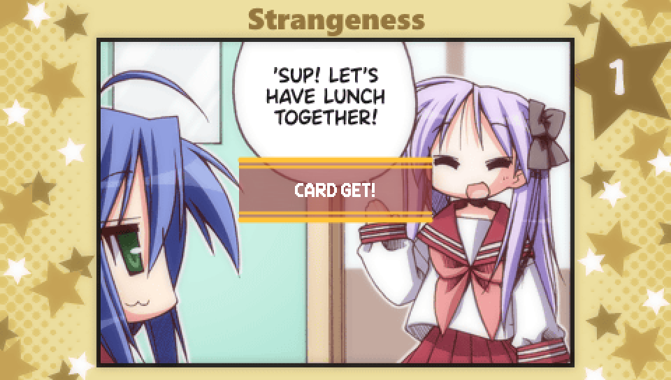

Episode 2: Comic Festival |

At various points, the protagonist will be able to go to stores
that offer collectible trading cards. These cards are pulled at random and cost 100 yen each.
This is what the money you collect throughout the game is used for.

Each card is a panel from a Lucky Star 4-panel comic.
These aren't comics made specifically for this game, rather they all come from
the Lucky Star manga volumes, but many were colorized for this game, and if you
view them in the Extras menu under "Special", they have also been given voice acting.
If you collect all the panels in a comic, you'll be able to watch the entire comic
play out with voice acting, as well as music and transitions between panels by selecting
the heading above the given comic (e.g. No. 01).
There are 10 comics in total, making for 40 cards to collect in total.
- Don't Hit Me! (Volume 6, Page 51)
- Rude Under a Mask of Politeness (Volume 6, Page 51)
- Strangeness (Volume 6, Page 94)
- Conditions Before Making a Move (Volume 6, Page 107)
- A Heartfelt Hope (Volume 7, Page 50)
- A New Door (Volume 7, Page 122)
- Signs of Spring (Volume 8, Page 135)
- Mid-Summer Santa (Volume 8, Page 136)
- Point (Volume 8, Page 137)
- The Main Event (Volume 8, Page 137)

While the cards you get are random, the distribution differs based on what Episode you are in
at the time, making some cards a lot easier to get at certain points in the game.
Note that "what Episode you're in" does not mean your overall story progress on a given save file,
but which Episode you are currently playing through. So for example, if you were to replay Episode 2
on a save file that's made it to Episode 4, and while in Episode 2 you buy trading cards, you will get
the card distribution for Episode 2.
The card distribution works as follows. The 40 cards are ordered from 1-40 using the following formula:
((comic_# - 1) * 4) + panel_#
Or in other words, listed in order starting from comic 1 panel 1 and ending with comic 10 panel 4.
The cards are then split up into 6 different groups.
- Cards 1-7
- Cards 8-14
- Cards 15-21
- Cards 22-28
- Cards 29-34
- Cards 35-40
The basic idea is that if you are in Episodes 1-6, cards in the group with the same number
will appear more frequently. So cards 1-7 are more common in Episode 1,
cards 8-14 are more common in Episode 2, and so on up to Episode 6.
In Episodes 0 and 7, all cards are equally likely.
The exact distributions are as follows:
- Episode 0 - 2.5% chance for all cards
- Episode 1 - 9.0% chance for cards 1-7, 1.1% chance for all other cards
- Episode 2 - 9.0% chance for cards 8-14, 1.1% chance for all other cards
- Episode 3 - 9.0% chance for cards 15-21, 1.1% chance for all other cards
- Episode 4 - 9.0% chance for cards 22-28, 1.1% chance for all other cards
- Episode 5 - 10.0% chance for cards 29-34, 1.2% chance for all other cards
- Episode 6 - 10.0% chance for cards 35-40, 1.2% chance for all other cards
- Episode 7 - 2.5% chance for all cards
Lastly, you may be wondering how you're able to buy trading cards in Episode 0 or Episode 1,
as you will have played through Episode 1 and possibly Episode 0 as well without being given an
opportunity to buy any. This is because the ability to buy trading cards in these Episodes is locked
behind certain criteria being met. For Episode 0, the Trading Card Shop the protagonist runs past
on the way to school is only accessible after you've cleared Episode 2 at least once on that save file.
For Episode 1, you have to have previously been to the Trading Card Shop at least once in
Episode 0 or Episodes 4-7 on that save file. In Episodes 2 and 3, the stores that serve as the place to
buy trading cards differ, so they don't count.
It's easiest to just play Episode 0 after beating Episode 2, then that will unlock the Trading Card Shop in Episode 1.
|
Lucky Lucky Memorial Routes |
|
As you progress further into the game, opportunites to unlock additional routes
for Episode 1, Lucky Lucky Memorial, open up. Episode 2 offers two additional routes to unlock
with the following unlock criteria:
- Hiyori Lucky Lucky Memorial Route -- Get the Hiyori good ending of Comic Festival
- Patty Lucky Lucky Memorial Route -- Get the Patty good ending of Comic Festival
How to get these good endings will be described further down.
|
|
This Episode has two mini scenarios you can unlock with the following unlock criteria:
- Hiyori Mini Scenario -- Get the good ending to Hiyori's Lucky Lucky Memorial Route
- Patty Mini Scenario -- Get the good ending to Patty's Lucky Lucky Memorial Route
How to get these good endings will be described further down.
|
Until you reach this point, any new choices you encounter don't have any impact,
and any choices previously seen in Episode 1's intro have the same impact as they do
in Episode 1 as far as character favorability is concerned.
However, once you reach this choice where the protagonist and Tsukasa notice
Kuroi Sensei looking concerned, this is your opportunity to either replay
Lucky Lucky Memorial, or to progress further into the game.
- Keep working -- Replay Lucky Lucky Memorial
- Call out to Kuroi Sensei -- Progress further into the game
|
If you choose to have the protagonist call out to Kuroi Sensei, you'll eventually get to this choice.
This marks the point where you can either choose to enter Episode 2 proper, or continue on what
is known as "Episode 0".
Episode 0 is another name for the "intro" and is the Episode from which all the other Episodes branch off.
Episode 0's content differs somewhat from Episode to Episode, as you will have
already seen by this Episode's introduction being different from Episode 1's.
As a result, if you don't check out Episode 0 before going to Episode 2,
you will miss out on some content for your current save file, so it's recommended
to play Episode 0 first.
- It's just a prank -- Continue with Episode 0
- Let's look for the culprits! -- Enter Episode 2
|
Route Guide -- Episode 0 (Episode 2 Version) |
As mentioned in the above section on trading cards, you won't be given
the option to have the protagonist go to the Trading Card Shop in this version
of Episode 0. It only becomes available after clearing Episode 2 at least once
on the current save file.
|
If you continue on Episode 0, the favorabilities you've built up with the characters
won't be reset, so the favorability gained from this choice will be added to the
favorability you have built up since the start of the current loop.
- Come on, you slackers! -- Kagami favorability + 3
- Let's stay calm! -- Miyuki favorability + 3
- ...Not much we can do -- Konata favorability + 3, Tsukasa favorability + 3
|
On the night before the school festival in the Episode 0 route,
the protagonist will get a call from Konata, Kagami, Tsukasa, or Miyuki
depending on who you have the most favorability with at that point.
Each call is somewhat different, so you'll have to play through Episode 0 four times
if you want to see everything.
Remember that the favorability will not have reset at any point, so any choice that
gives you favorability with these characters starting from the beginning of this loop
will contribute to the outcome here.
|
When you reach the end of Episode 0, you'll get a version of the credits
where the background is entirely black. These are the bad ending credits.
It's not possible to get a good ending for Episode 0, so once you've reached the end
feel free to move on to Episode 2 unless you want to see any more of the phone calls you
may have missed.
|
Route Guide -- Comic Festival |
- Calm them down -- Hiyori favorability + 2, Patty favorability + 2
- Escape the classroom! -- no effect
- See what happens -- no effect
|
- RUN FOR IT! -- no effect
- Have at me, then! -- no effect
- Invoke the Human Instrumentality Project! -- Hiyori favorability + 2, Patty favorability + 2
|
- Death penalty? -- no effect
- Five years minimum -- no effect
- Two years maximum -- Hiyori favorability + 2, Patty favorability + 2
|
- What's done is done -- Kou favorability + 4
- I can't take it! -- no effect
- LIES! -- Patty favorability + 2
|
- Force the event in -- no effect
- Try making more threats? -- Patty favorability + 2
- Get some inspiration? -- Hiyori favorability + 2, Patty favorability + 2
Additionally, picking "Get some inspiration?" will take you to a special scene
where the group travels to Akihabara.
|
- Anizawa, of course! -- Patty favorability + 2
- Obviously Guy! -- Hiyori favorability + 2
- I'm not interested... -- no effect
Note that you'll only encounter this choice if you picked "Get some inspiration?"
in the previous choice.
|
At the end of the trip to Animate, the protagonist will find 500 yen
in his pockets (which is added to your total amount of money)
and decide to try the trading card machines at the store's entrance.
This is Episode 2's location for buying trading cards and so has the Episode 2 card distribution.
- 9.0% chance for cards 8-14, 1.1% chance for all other cards
Note that this scene only occurs if you picked the "Get some inspiration?"
choice mentioned above.
|

- Obviously Miyuki-san! -- no effect
- Konata-san, of course! -- Hiyori favorability + 2
- Maybe Kuroi Sensei!? -- no effect
|
- Tamura-san's idea -- Hiyori favorability + 2
- Patty-san's idea -- Patty favorability + 2
- Yasaka-san's idea -- Kou favorability + 2
|
- You're being possesssed by an evil spirit! -- Hiyori favorability + 2
- You're an alien! -- Patty favorability + 2
- Calmly analyze the situation -- Kou favorability + 4
|
This choice is special in that it influences what will happen for the rest of the Episode.
Each choice will put you on a different path, leading to the story and upcoming choices differing in
some ways. However, what path you choose does not impact what ending you will get.
- The third year classrooms floor -- Enter Path A
- The rest of this floor -- Enter Path B
- The gymnasium -- Enter Path C
|
- But it's hardcore stuff, isn't it? -- Patty favorability + 2
- Can't the Animation Research Club hold it? -- Hiyori favorability + 2
- Give up...? -- no effect
|
Note that this choice will only appear if you are on Path A.
- Run while you still can? -- no effect
- Become a magical girl too? -- no effect
- Get Tamura-san and Patricia-san to help? -- Kou favorability + 3
|
Note that this choice will only appear if you are on Path B.
- Run while you still can? -- no effect
- Write the script yourself? -- no effect
- Get Tamura-san and Patricia-san to help? -- Kou favorability + 3
|
Note that this choice will only appear if you are on Path C.
- Run while you still can? -- no effect
- Sabotage the stage construction! -- no effect
- Get Tamura-san and Patricia-san to help? -- Kou favorability + 3
|
Note that the choice "taking advantage of their weakness is..." will only appear
if you are on Path A. On Paths B and C, only the first two choices will appear.
- Absolutely! -- Kou favorability + 3
- Perhaps not? -- no effect
- Taking advantage of their weakness is... -- no effect
|
Note that this choice will only appear if you are on Path A.
- I choose Tamura-san's idea! -- Hiyori favorability + 2
- I choose Patty-san's idea! -- Patty favorability + 2
- Where on earth did this come from? -- no effect
|

Note that this choice will only appear if you are on Path B.
- Tamura-san's idea -- Hiyori favorability + 2
- Patty-san's idea -- Patty favorability + 2
- How about we keep thinking? -- no effect
|
Note that this choice will only appear if you are on Path C.
- Let's add more workers! -- Hiyori favorability + 2
- Let's call it for today! -- Patty favorability + 2
- Go over our plans again? -- Kou favorability + 2
|
When Miyuki says this line, that is the point where the ending you get for Comic Festival is decided.
There are no bad endings for Comic Festival, but instead there are three different
good endings you can get depending on which character you have the most favorability with at this point.
- Hiyori good ending -- character with the most favorability is Hiyori
- Patty good ending -- character with the most favorability is Patty
- Kou good ending -- character with the most favorability is Kou.
If you see this line of dialog, you have gotten the Hiyori good ending.
If you see this line of dialog, you have gotten the Patty good ending.
If you see this line of dialog, you have gotten the Kou good ending.
|
On the morning of the school festival, the protagonist will bring extra money with him
to spend at the stalls people have set up at the festival. This will add 500 yen to your
total amount of money, which you can spend on trading cards.
|
Route Guide -- Lucky Lucky Memorial (Episode 2 Routes) |
|

Once you have beaten Comic Festival and have met the necessary criteria (described above), you can
play through Hiyori's and Patty's Lucky Lucky Memorial Routes on future loops on that save file.
This is done by replaying Episode 1 and making the correct choices to get Hiyori's or Patty's
favorability to be the highest before the start of the third day, which will be described below.
But for now, when you get to this choice, pick "Keep working" to replay Episode 1.
|
|
- What did you think, Konata-san? -- Konata favorability + 2
- I don't know, really... -- no effect
You'll want to pick "I don't know, really..." so you don't raise Konata's favorability.
|
|
- And if I said no -- no effect
- Ask a first year student -- go to choice of first year student to ask
- Yes, Miyuki-san -- Miyuki favorability + 2
- What do you think, Tsukasa-san? -- Tsukasa favorability + 2
You'll want to pick "Ask a first year student" so you can choose whether you want
to play the Hiyori or the Patty route.
Note that the choice "Ask a first year student" will only appear if one of the first year
students' routes is unlocked. If you have only gotten the Kou good ending to Comic Festival,
this choice won't appear for you, and so you'll have to get either the Hiyori good ending
or the Patty good ending to Comic Festival in order for the choice to appear.
|
|
- Ask Tamura-san -- Hiyori favorability + 2
- Ask Patty-san -- Patty favorability + 2
Note that you'll only have access to the choices for the first year students whose
Lucky Lucky Memorial route you have unlocked. So for example, if you have gotten
the Hiyori Comic Festival good ending but not the Patty one, only "Ask Tamura-san" will appear.
|
|
- Let's find another way -- no effect
- Okay -- Konata favorability + 2
You'll want to pick "Let's find another way" so you don't raise Konata's favorability.
|
|
As described in the Episode 1 guide, it's at this moment that the route you get is decided.
For whoever has the most favorability, you'll end up on that character's route and you'll be given
+4 favorability for that character. So that's +4 Hiyori favorability in the Hiyori route,
and +4 Patty favorability in the Patty route. If there is a tie, Konata's route will be picked,
meaning you have to pick the exact right choices if you don't want Konata's route.
|
Route Guide -- Lucky Lucky Memorial (Hiyori Route) |
|

Before the protagonist leaves his house to go to school on the first morning
of this route, he'll take some extra money to buy a drink.
This will add 500 yen to your total amount of money, which you can spend on trading cards.
Note that this is an increase from the 120 yen you are given at this point in the Konata, Miyuki, and Tsukasa routes.
Each route has its own value of money given to you at this point, so this is not an increase across the board.
|
|
- Fate materials? -- Hiyori favorability + 2
- Doujinshi? -- no effect
- A love letter! -- no effect
|
|
- Enter the store -- buy trading cards with the Episode 1 distribution
- I don't have time for that -- don't buy trading cards
Note that this choice will only appear if you've been to this trading card shop
before, such as by replaying Episode 0 after completing Comic Festival.
Additionally, as a reminder, the trading card distribution for Episode 1
is that there is a 9.0% chance for cards 1-7. and a 1.1% chance for all other cards.
(see the section at the top of this page for more details).
|
|
This scene after Konata gets mad at the protagonist and storms out of
play practice contains the first check you have to pass to get the good ending.
To pass the check, you need at least 8 favorability points with Hiyori.
If you pass the check, you will see the above line and the following interaction
where Hiyori talks about the manga she was drawing the night before.
If you fail the check, the scene will play out a bit differently.
|
|
- Talk about anime -- Konata favorability + 2
- Talk about manga -- no effect
- Talk about video games -- no effect
|
|
- Console her -- no effect
- Hug her tightly -- Hiyori favorability + 2
- Do nothing -- no effect
|
|
This moment near the end of the scene with Hiyori on the night before the school festival
contains the second and final check you have to pass to get the good ending.
To pass the check, you need at least 10 favorability points with Hiyori and to have passed the previous check.
If you pass the check, Hiyori will email the protagonist after smacking himself to try and pump himself up.
If you fail the check, the scene will end immediately before this line and you'll get the
Lucky Lucky Memorial bad ending.
|
Route Guide -- Lucky Lucky Memorial (Patty Route) |
|
Before the protagonist leaves his house to go to school on the first morning
of this route, he'll take some extra money to buy a drink.
This will add 500 yen to your total amount of money, which you can spend on trading cards.
Note that this is an increase from the 120 yen you are given at this point in the Konata, Miyuki, and Tsukasa routes.
Each route has its own value of money given to you at this point, so this is not an increase across the board.
|
|
- I'll convince Miyuki-san! -- Patty favorability + 2
- I can ask, but... -- no effect
- Maybe you should just give up? -- no effect
|
|
- Enter the store -- buy trading cards with the Episode 1 distribution
- I don't have time for that -- don't buy trading cards
Note that this choice will only appear if you've been to this trading card shop
before, such as by replaying Episode 0 after completing Comic Festival.
Additionally, as a reminder, the trading card distribution for Episode 1
is that there is a 9.0% chance for cards 1-7. and a 1.1% chance for all other cards.
(see the section at the top of this page for more details).
|
|
This scene after Konata gets mad at the protagonist and storms out of
play practice contains the first check you have to pass to get the good ending.
To pass the check, you need at least 8 favorability points with Patty.
If you pass the check, you will see the above line and the following interaction
where Patty talks about how she can relate to the protagonist's feelings about the kiss scene.
If you fail the check, the scene will play out a bit differently.
|
|
- Talk about anime -- Konata favorability + 2
- Talk about manga -- no effect
- Talk about video games -- no effect
|
|
- I'll practice with her -- Patty favorability + 2
- I'll watch for a little bit -- no effect
- I'll leave her be -- no effect
|
|
This moment near the end of the scene with Patty on the night before the school festival
contains the second and final check you have to pass to get the good ending.
To pass the check, you need at least 10 favorability points with Patty and to have passed the previous check.
If you pass the check, Patty will ask the protagonist if she can meet with him the next day to talk about something.
If you fail the check, the scene will end immediately before this line and you'll get the
Lucky Lucky Memorial bad ending.
|
|